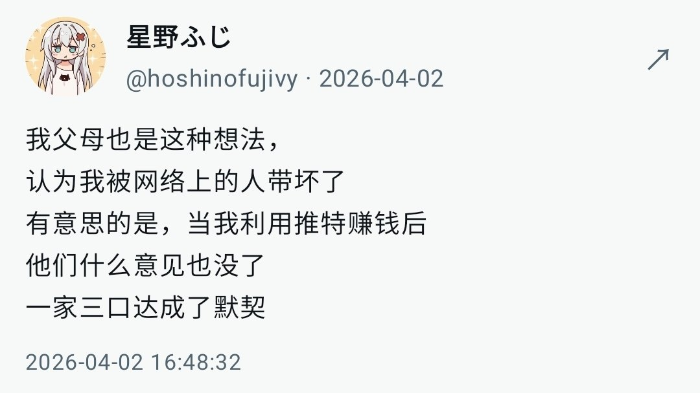

@fake_fuji 我写了一个扩展程序来解决这个问题，可以在使用的时候无感自动保存到浏览器并可以选择导出



这个帖子引用的是我大号的原帖😭
刷江老师的主页，看到这条贴子，怀念起我的大号了😭
我在互联网档案库里找到被引用的原帖了 https://t.co/u0XxRLhfVc https://t.co/nbIJMfXY5t
刷江老师的主页，看到这条贴子，怀念起我的大号了😭
我在互联网档案库里找到被引用的原帖了 https://t.co/u0XxRLhfVc https://t.co/nbIJMfXY5t
程序在edge浏览器插件商店过深了喵，作用就是在浏览器上使用推特时候可以自动捕获自己原创推文、回复、引用、长文、图片、视频、gif、投票的选项和截止时间（可选把文件本体缓存到本地） 并且也可以自动保存其他设备发布的以上相关 https://t.co/nGQkWLh1l7